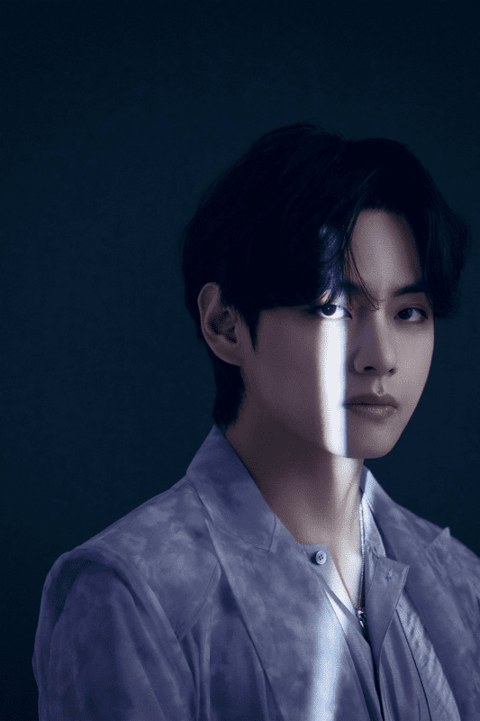
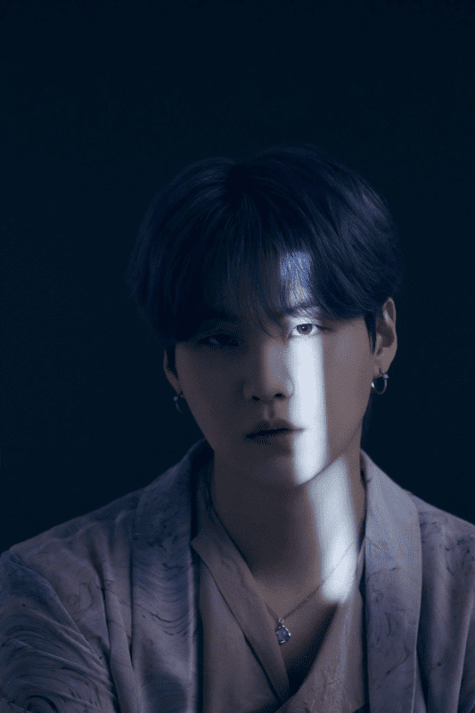
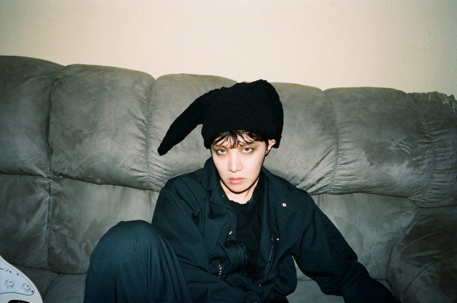

Jung Kook || V || Jimin || SUGA || Jin || RM || J-Hope ||
Jung Kook

- Stage Name: Jungkook (정국)
- Birth Name: Jeon Jeong Kuk (전정국)
- Birthday: September 1, 1997
- Zodiac Sign: Virgo
- Height: 178 cm (5’10”)
- Weight: 71 kg (156 lbs)
- Blood Type: A
- MBTI Type: INTP-T
- Instagram: @jungkook.97
V
- Stage Name: V (뷔)
- Birth Name: Kim Tae Hyung (김태형)
- Birthday: December 30, 1995
- Zodiac Sign: Capricorn
- Height: 178.8 cm (5’10.4″)
- Weight: 64 kg (141 lbs)
- Blood Type: AB
- MBTI Type: INFP-T
- Instagram: @thv
Jimin

- Stage Name: Jimin (지민)
- Real Name: Park Ji Min (박지민)
- Birthday: October 13, 1995
- Zodiac Sign: Libra
- Height: 174 cm (5’8.5″)
- Weight: 58.6 kg (129 lbs)
- Blood Type: A
- MBTI Type: ESTP (His previous result was ENFJ)
- Instagram: @j.m
SUGA
- Stage Name: SUGA (슈가) / Agust D (when solo)
- Birth Name: Min Yoon Gi (민윤기)
- Birthday: March 9, 1993
- Zodiac Sign: Pisces
- Height: 174 cm (5’8.5″)
- Weight: 63 kg (138 lbs)
- Blood Type: O
- MBTI Type: ISTP (His previous results were INFP->INTP)
- Instagram: @agustd
Jin

- Stage Name: Jin (진)
- Birth Name: Kim Seok Jin (김석진)
- Birthday: December 4, 1992
- Zodiac Sign: Sagittarius
- Height: 178.3 cm (5’10.2”)
- Weight: 61 kg (134 lbs)
- Blood Type: O
- MBTI Type: INTP
- Instagram: @jin
RM

- Stage Name: RM (아르엠), his old stage name was Rap Monster (랩몬스터)
- Real Name: Kim Nam Joon (김남준)
- Birthday: September 12, 1994
- Zodiac Sign: Virgo
- Height: 180 cm (5’11”)
- Weight: 76 kg (167 lbs)
- Blood Type: A
- MBTI Type: ENTP (his previous results were ENFP and INFP)
- Instagram: @rkive
J-Hope
- Stage Name: J-Hope (제이홉)
- Birth Name: Jung Ho Seok (정호석)
- Birthday: February 18, 1994
- Zodiac Sign: Aquarius
- Height: 177 cm (5’10”)
- Weight: 65 kg (143 lbs)
- Blood Type: A
- MBTI Type: INFJ (His previous result was ESFJ)
- Instagram: @uarmyhope